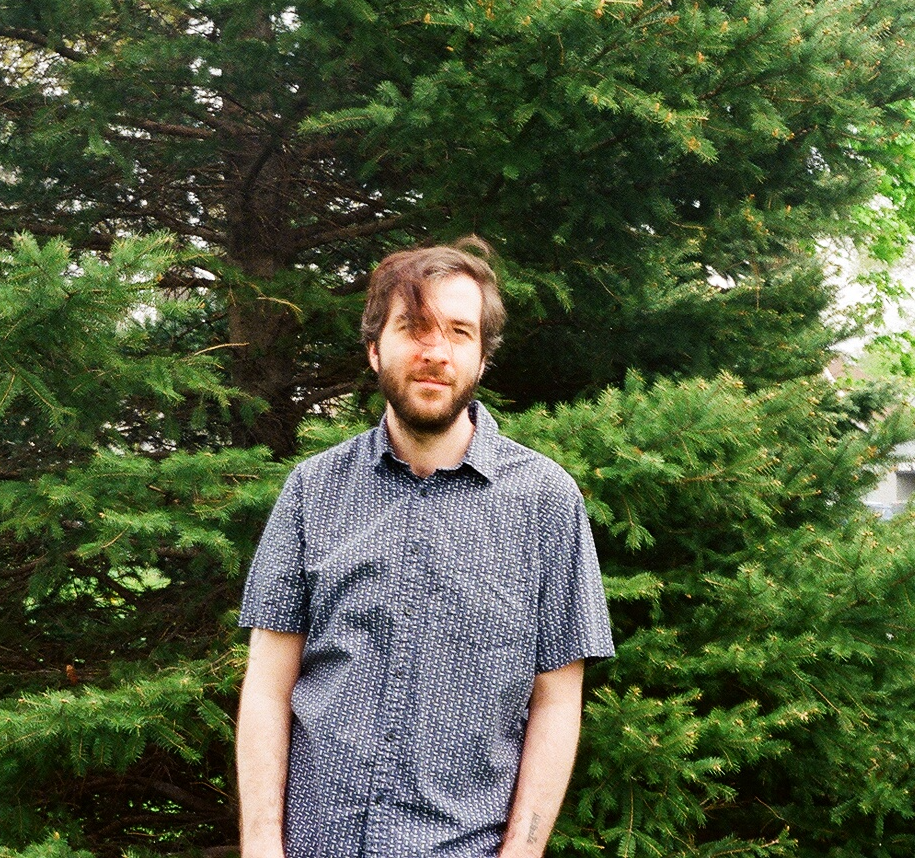

Frederico Prado
Msc, Linguistics
Linguistics PhD student at McMaster University, Ontario, Canada. I have a BA in linguists from Unicamp, São Paulo, Brazil.
My main research area is theoretical syntax, my main interests being Romance languages, empty categories and issues related to topicalization. I am also interested in experimental syntax and the consequences the usage of formal methods can bring to our i) theoretical generalizations and ii) issues of grammar architecture.
Full CV
Where to find me
Github